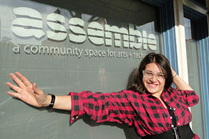
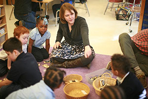
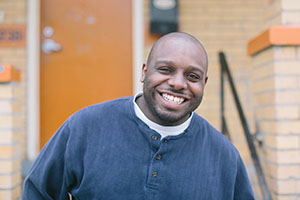
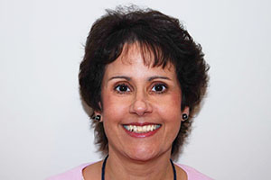

The Remake Learning Playbook is an ambitious project to open source the project code for learning innovation ecosystems.
Created by The Sprout Fund as a digital & tangible product, the Playbook documents the process and outcomes of both the Pittsburgh region’s efforts to create a community-wide learning innovation network, and specific projects the network has catalyzed.
The Playbook captures the spirit and substance of the Remake Learning Network in action. It covers the theory and practice of building learning innovation networks, the resources and strategies required to put networks into action, and the impact of the network in schools, museums, libraries, communities, and more.
These are case studies of learning remade in Pittsburgh. We invite you to explore the innovation enabled by the Remake Learning Network in several educational contexts:
Assemble
Infusing a Neighborhood with Science and Creativity
Assemble creates opportunities for young people to make things that inspire and empower.
As school budgets shrink, arts education is increasingly targeted as a place to cut funding. Yet as we prepare young people to join a workforce where creativity, collaboration, and critical thinking are essential to success, experiential learning that emphasizes imagination and design thinking has become more important than ever. Assemble picks up where schools leave off, offering free and open learning opportunities that integrate the arts, technology, and science in ways that blurs traditional boundaries between disciplines.
Part gallery, part art studio, part makerspace, Assemble offers a range of dynamic activities, from Saturday Crafternoons with make-and-take projects to monthly Learning Parties where kids can try their hand at art-making, conduct scientific and technological experiments, have conversations with experts, and more.
Assemble was founded in 2011 by Nina Barbuto, an architect and Pittsburgh native who returned home after working in Los Angeles, where she also participated in a research project focusing on arts and learning environments. Inspired by her West Coast experiences and committed to increasing access to arts and technology opportunities for girls and underserved youth, Nina established Assemble in the Garfield neighborhood of Pittsburgh, a community in transition whose residents are predominantly African-American.
Assemble also reaches kids across Pittsburgh through its many partnerships. Working with more than 20 organizations, Assemble takes its STEAM and Maker educational programs on the road, sharing programming with kids in all corners of the city. Still, Assemble stays firmly rooted in its community, offering a safe and nurturing space to hang out, get free afterschool homework help, or try something new at the monthly Youth Maker Nights.
In informal learning spaces like Assemble, imagination drives invention. If you can dream it, you can make it.
By teaching kids science and technology in hands-on—sometimes messy—ways, Assemble demystifies the creative process. Kids get their hands dirty while they learn, whether they’re gluing LED lights to a cardboard bridge or spinning a clay pot on a pottery wheel. Assemble maintains a low barrier to entry for its programs: most require no pre-registration, and nearly all are free. In this way, Assemble works as an “on-ramp” to deeper learning and provides more opportunities to develop skills.
The organization runs its workshops by hiring educators, technologists, and working artists on a contract basis, relying on Maker Corps VISTA and Board members for institutional support, and even enabling teenagers to teach younger students as peer-mentors.
These educators work with students like Daijah, Ashanti, and Cheyenne, middle school students from the neighborhood. Following a summertime shooting at a nearby playground, the girls found a safe and welcoming place at Assemble, where they’ve since become a fixture. The girls have yet to miss a Saturday Crafternoon event, and they recently built a prototype for an LED lighting system that could make their neighborhood parks safer places for kids.
by Adam Reger
Network in Action: Research fellows inform program design. (catalyze)
Through its participation in the Remake Learning Network, Assemble connected with the University of Pittsburgh’s Center for Learning in Out-of-School Environments (UPCLOSE), an academic unit that studies informal learning programs. Through the support of the Grable Foundation, Marti Louw, then a design researcher at UPCLOSE, conducted a year-long fellowship at Assemble, working closely with staff and mentors to study how parents and adult caregivers seek and choose learning opportunities for young people, and then they co-designed strategies for improving family engagement in supporting youth interest in making and creative technology.
Persons of Interest

Nina Barbuto
Nina Barbuto is the founder of Assemble, a community space for arts and technology where kids can drop in for homework help and dive into their own creative projects.
We have so many resources in this town, and a lot of them are just in those ivory towers. At Assemble, kids get to meet real scientists and see that scientists aren’t just white guys with crazy hair and glasses.
After moving to Los Angeles to pursue her career in architecture, Pittsburgh-native Nina Barbuto took a temporary position on a research project focusing on arts and learning environments. Inspired by her West Coast experiences and committed to increasing access to arts and technology opportunities for girls and underserved youth, Nina established Assemble in the Garfield neighborhood of Pittsburgh, a community in transition whose residents are predominantly African-American.
To help build a bootstrapping community space, Nina has partnered with members of the Remake Learning Network like robotics instructors from Carnegie Mellon to leverage local expertise and design researchers from the University of Pittsburgh to evaluate and improve programming.
Caroline Combemale
Caroline Combemale is a teen finding her own learning pathway in Pittsburgh with the help of the Remake Learning Network.
I think I kind of grew up a little bit working at Assemble because I became more mature, and really learned how to act around adults. Before I was kind of just this hyper child who just loved to do everything but didn’t know how to communicate with anybody.
After spending a few years enrolled in a cyber-school, Caroline Combemale was feeling isolated. To re-connect with her peers, Caroline became involved in Remake Learning Network organizations like The Labs @ CLP and the Carnegie Science Center became. At Assemble, a community space for arts and technology, Caroline became an intern, attending events and teaching classes. She says teaching and collaborating on hands-on projects has taught her how to express herself.
Caroline has reached over 1,000 students in the Pittsburgh area with her Scratch workshops and classes. She's an active youth member of the Remake Learning Network, teaching coding to younger kids at Assemble and working with her peers at Carnegie Science Center’s Sci-Tech. Being a teen teacher has helped boost her confidence and strengthen Caroline’s love for technology.
More Information
If you’re interested in learning more about Assemble, contact Nina Barbuto.
Assemble Contract for Artists—Sample: Sample contract for artists renting Assemble’s space for shows and installations, including commission terms for artwork sold.
DIY.org: An online community for youth centered on learning, making, and sharing what they’ve made; members earn patches for completing challenges.
Machine Project: A storefront space in Los Angeles that hosts free events and serves as an informal educational institution.
Learning Space Toolkit: A free resource for planning learning spaces; developed by the North Carolina State University Libraries.
Center for Youth Program Quality: A Michigan organization committed to helping programs enhance the experiences they provide for youth.
Hilltop YMCA Creator Space: An out-of-school space designated to teach STEM (Science, Engineering, Technology, and Math) concepts to local youth through making.
The Maker’s Place: An entrepreneurship, science, technology, engineering, art and math focused out-of-school time program in Pittsburgh.
Allentown Learning and Engagement Center: a collaborative effort of the Brashear Association and the Carnegie Library of Pittsburgh that offers after-school and summer programs as well as health and wellness information, career and literacy programs, and other assistance.
Artists Image Resource: An artist-run, nonprofit printmaking studio whose purpose is to integrate the creation of fine art printwork with innovative educational programs.
Center of Life: A faith-based community empowerment organization whose mission is to provide families and youth with life-skills, education, training, and resources.
Irma Freeman Center for Imagination: an arts and green energy community center that hosts art exhibitions, classes, and outreach programs for youth and adults.
Millvale Community Library: A community-serving library that hosts weekly maker nights and other programs to engage and enrich the out-of-school time of Millvale children and youth.
The Pittsburgh Project: A Christian nonprofit community development organization that hosts service camps, youth development programs, and provides community outreach and services.
Add your comments and feedback about this case on Medium.
BirdBrain Technologies
Developing Ed-Tech that Learns Alongside Students & Teachers
BirdBrain Technologies creates affordable robotics tools that help teachers make coding and computer science accessible.
Robotics, coding, and computer science are increasingly important to the future career prospects of today’s students. Yet classroom teachers and informal educators often face barriers in the cost of equipment and the perceived difficulty of the subject matter.
By providing flexible and affordable robotics products that are easy to use, Pittsburgh’s BirdBrain Technologies introduces students to programming and robotics and cultivates their ability to think and work creatively with these 21st century tools.
Founded in 2010 by Tom Lauwers, who had just completed a Ph.D. in Robotics at Carnegie Mellon University (CMU), BirdBrain Technologies originated from Lauwers’ work with CMU’s Community Robotics, Education and Technology Empowerment (CREATE) Lab, which promotes technological fluency through education.
BirdBrain’s first product was a tool to motivate computer science students by giving them a tangible representation of their coding. The Finch is a durable, two-wheeled plastic robot that accepts computer science commands in a number of programming languages and gives students instant visual feedback. Shortly thereafter, Lauwers designed the Hummingbird Robotics Kit, which contains the basic components needed for a wide array of robotics, kinetics, and animatronics projects across disciplines.
The strength of educational products like Finch and Hummingbird lies in their ability to make learning something you can see and touch. For many students, these tools represent their first exposure to project-based learning. In particular, Lauwers says, “It’s about doing something as a project that requires creativity and thinking?—?and it probably doesn’t work the first time. Students have to do some engineering and some programming and some testing before they get it right.”
The approach fits well with the demands of the project-based workplace of the future, which will demand employees with creativity and problem-solving skills.
“I would much rather see a student write a program that makes a multiplication table and autofills it than memorize a multiplication table,” Lauwers says.
The Finch helped me understand objects and their methods in a way that the textbook never could.
Lauwers partnered with educators in Pittsburgh-area middle schools, high schools, and community colleges to co-design and test products, integrating feedback to develop instructional resources that work both in- and out-of-school.
Supplementing these in-person collaborations are online forums where teachers post lesson plans for using BirdBrain products and share tips for engaging students.
Through these partnerships, Lauwers has built a regional “cluster” of Finch and Hummingbird users in the Pittsburgh region. It’s a strategy that has built a market for BirdBrain products and enriched the community of educators and students using the Finch and Hummingbird Kit to expand opportunities for robotics and computer science learning.
by Adam Reger
Network in Action: Professional development brings educators together with innovators. (convene)
Partnerships with professional development agencies in the Remake Learning Network has been instrumental in helping BirdBrain improve its products and expand its reach.
ASSET STEM Education hosts Hummingbird professional development on an almost monthly basis. The Allegheny Intermediate Unit hosts two-day training workshops in their trasnformED professional development space, a digital playground for teachers, exploring new education technology tools.
Working with the Carnegie Library of Pittsburgh (CLP) has helped Lauwers adapt his products for self-directed learning in out-of-school environments. Materials like comic book-style instructional guides were originally made by CLP librarians, and now they are used by BirdBrain in all their product kits.
Person of Interest
Tom Lauwers
Tom Lauwers founded BirdBrain Technologies to produce tangible ed-tech products to introduce kids to computer science in creative ways.
We focus on making the software easy to install in a school setting. And then what is the curriculum around that? Are there classroom examples that we can show teachers? What is the professional development situation like? Is there a way for a teacher to be trained? All of those additional things are part of the product. They’re not just add-ons. They are an essential part.
When Tom was working toward his Ph.D. at Carnegie Mellon’s CREATE Lab, he became interested in the potential for robotics technologies to enhance motivation and learning in science and technology education. Working with his CREATE Lab teammembers, Tom began designing robots that could adapt to a variety of educational environments. To take his research projects to scale, Tom spun-out his own startup company BirdBrain Technologies in 2010 and began partnering with school teachers and out-of-school educators to design and develop new products like the HummingBird Robotics kit that combines arts & crafts activities with introductory computer programming and hardware lessons.
To help build his customer base, and also constantly improve the products and their associated educational materials, Tom has built partnerships with professional development agencies who serve thousands of teachers, and also created online communities for teachers from across the country to share ideas for using BirdBrain products in everything from art class to engineering electives.
More Information
If you’re interested in learning more about BirdBrain Technologies, contact Tom Lauwers.
Arts & Bots Full Hummingbird Curriculum: Curricula used by Arts & Bots for teaching language art, science, art, technology, math, social studies, biology, and anatomy.
Hummingbird Grant Writing Assistance: A collection of tools and resources, including application templates, for requesting funding to support the use of Hummingbird Kits.
Finch Grant Writing Assistance: A collection of tools and resources, including application templates, for requesting funding to support the use of the Finch.
Finch Robot Loan Program: A program that loans out six sets of 40 Finch robots monthly during the school year, so that young coders across the country can have access to the Finch.
Finch Assignments: Collected assignments and activities that allow educators to get up and running with the Finch quickly—organized by the concept being illustrated.
Hummingbird Community: Forums, classroom-tested projects, and other resources for teaching with the Hummingbird kit; for educators, by educators.
Hummingbird Virtual Training Workshop: A collection of 8 videos that serve as a virtual workshop to get educators up and running with the Hummingbird kit.
Hummingbird Tutorials: Tutorials for building and programming robots of various complexity.
Zulama: An educational technology company that develops systems and tools that blend technology and creativity for educators and students.
Romibo: An interactive robot developed to assist with autism therapy and language learning by telling stories and delivering prompts and praise.
Carnegie Mellon’s Robotics Academy: A research organization with CMU’s School of Computer Science that studies how teachers use robots in classrooms to teach CS-STEM.
Schell Games: A game design and development company that specializes in creating interactive educational games.
Little Bird Games: An educational and therapeutic video, board, and card game design company.
Add your comments and feedback about this case on Medium.
Carnegie Mellon University
Bridging the Community & Higher Education
Carnegie Mellon’s CREATE Lab and the Entertainment Technology Center are connecting university students and researchers to the communities they serve.
Universities are engines of exploration, discovery, and innovation. Still, too often, research universities with deep wells of intellectual capital miss opportunities to deliver meaningful solutions to the communities around them. When educators and community members are able to tap into these extraordinary resources, students gain exposure to some of today’s most cutting edge technologies.
That’s why Carnegie Mellon University ( CMU), one of the most highly regarded private research universities in the world, has connected with a network of regional educators to co-develop innovative, effective education solutions that work in the Pittsburgh region.
The Community Robotics, Education, and Technology Empowerment ( CREATE) Lab and the Entertainment Technology Center ( ETC) are two examples of CMU’s commitment to putting innovation to work in the Pittsburgh region.
Ideas and inspirations for the way the world should be and how we can design the future with technology is sourced from the communities and the people and the experiences we have.
Established in 1997 by roboticist Illah Nourbakhsh, the CREATE Lab explores socially meaningful innovation and deploys robotic technologies to address community challenges ranging from air pollution to the achievement gap.
“The CREATE Lab was born out of a desire to change the way the university relates to its community,” says Nourbakhsh. “If we start with education, we can empower students to think about technology as a tool that they can use for social change.”
By partnering with schools, museums, libraries, and child-serving organizations, researchers in the CREATE Lab develop tools and programs to empower a technologically fluent generation through experiential learning. Together with the Pittsburgh Association for the Education of Young Children ( PAEYC), CREATE Lab developed Message From Me, kid-friendly kiosks that enable young children to record their daily experiences through pictures and speech and send them to their parents’ cell phones or email. Now in more than 100 early childhood classrooms throughout the Pittsburgh region, Message From Me enhances parent-child conversations and involves families in the day-to-day educational experience of their children.
To expand its impact in the region, CREATE Lab established a Satellite Network in partnership with Marshall University, West Liberty University, Carlow University, West Virginia University, and Penn State New Kensington. These institutions connect CREATE Lab technologies with pre-service teachers who develop pedagogical uses while also offering critical user feedback on potential products. This process of iterative design ultimately produces tools that are optimized for effectiveness in a diverse array of learning environments.
Started by computer scientist Randy Pausch and drama professor Don Marinelli in 1999, the ETC is a two-year graduate program offering a master’s degree in entertainment technology that combines technical courses in digital technology and game development with art courses in storytelling and design.
To earn their degree, students must work with community representatives to co-develop games for good—from schools to hospitals to museums and beyond. These partnerships often produce compelling results. In 2010, Elizabeth Forward School District built a SMALLab (Situated Multimedia Arts Learning Laboratory), an immersive environment that uses games to enable students to learn kinesthetically. By partnering with a team of students from the ETC, educators at Elizabeth Forward created their own learning games that fit within their curriculum and appealed to students.
ETC director Drew Davidson, a leading member of the Remake Learning Network since its earliest days, encourages students to consider the educational potential of new technology whenever possible. “We believe that all of this great entertainment technology can have positive social impact,” he says. “We’re always looking for great projects in general, but we’re also trying to do something more—to make the world a better place.”
by Ashlee Green
Network in Action: Lunch & Learns create opportunities to share knowledge and expertise. (convene)
Convening network members to learn from the thought leadership and collective expertise of higher education institutions like Carnegie Mellon helps to raise the level of awareness and understanding of new technologies among network members.
Speaking at a Remake Learning Network Lunch & Learn, CREATE Lab director Dr. Illah Nourbakhsh explored how advanced technologies are shaping a new discourse regarding the role of education in directing community change, and the role of communities in directing the future of technology innovation.
Persons of Interest
Drew Davidson
Drew Davidson is director of the Entertainment Technology Center at Carnegie Mellon University.
When the network started, it seemed like a really great fit for us because we’re always looking for partners who have a design challenge. So for our educational goals, like giving a interdisciplinary team an interesting and creative design challenge for the semester, can also help a school or a museum or a library.
Drew is a professor, producer, and player of interactive media. His background spans academic, industry, and professional worlds, and he is passionate about stories and transformational experiences across texts, comics, games, and other media. At ETC, Drew is dedicated to teaching and research that both pushes the limits of interactive media and has relevance to people. In this vein, he has pushed for ETC students and faculty to engage with educators to co-develop education solutions that leverage the power of technology, gaming, and storytelling to enhance teaching and learning.
Since 2000, graduate teams at ETC have contributed to more than 175 community projects, including exemplary Remake Learning projects like MAKESHOP at the Children’s Museum of Pittsburgh and the SMALLab at Elizabeth Forward Middle School, as well as national models or learning innovation like YouMedia in Chicago.
Illah Nourbakhsh
Illah Nourbakhsh directs the CREATE Lab at Carnegie Mellon where he oversees teams of technologists who partner with community members to make a social impact.
CREATE Lab is fundamentally about community engagement. What we do is pick a community of practice and then work with that community of practice to understand their needs to improve the world socially and then innovating with them. So it’s what we call participatory design. It’s interesting because the whole Remake Learning Network is about participatory design.
Illah has spent his career exploring human-robot interactions with the goal of creating rich, effective, and satisfying interactions between humans and robots. Working as a professor at CMU’s Robotics Institute, Nourbakhsh leveraged his expertise in human-robot interactions to launch the CREATE Lab in 1997 to explore socially meaningful innovation and deployment of robotic technologies to address community challenges ranging from air pollution to the achievement gap.
In addition to incubating some of the most important projects to emerge from the Remake Learning Network, the CREATE Lab has established a satellite network in partnership with schools of education in Pittsburgh and nearby West Virginia, engaging 260 school teachers and 650 pre-service teachers in the creative use of technology for learning.
More Information
If you’re interested in learning more about CREATE Lab, contact Dror Yaron.
If you’re interested in learning more about the Entertainment Technology Center, contact Drew Davidson.
Add your comments and feedback about this case on Medium.
The Children’s Innovation Project
Supporting Young Learners to Notice, Wonder, and Persist
The Children’s Innovation Project approaches technology as raw material to support broad interdisciplinary learning for children to develop habits of mind as innovators.
The Children’s Innovation Project began in 2010 when CREATE Lab resident artist, Jeremy Boyle and Kindergarten teacher, Melissa Butler partnered to explore the question: “What might meaningful technology learning look like for young children?” Working together at Pittsburgh Allegheny K-5, the pair began co-creating a learning progression of language-logic opportunities for children to deeply explore the material of technology.
With the Children’s Innovation Project, children explore and learn about electricity and simple circuits through hands-on engagement with Circuit Blocks and other raw materials, developing habits of mind to notice—wonder—persist. Children make connections to objects in their world—specifically through imagining about the insides of electronic toys, opening them to notice carefully, identifying components, and then repurposing and reconfiguring their internal components into new circuits and new ideas. Approaching technology as raw material allows technology to be a means to learning, not an end.
The pair began collaborating on various arts-integration projects back in 2003, when Boyle was Resident Artist at the Mattress Factory. Since 2010, they have focused on what they see as ’depth of possibility in broader interdisciplinary learning’ for children to develop precision of language, collaboration, and flexibility and fearlessness in problem solving.
Learning with the Children’s Innovation Project is for all children, not for enrichment groups or special pull-out programs.
Circuit Blocks have been iteratively designed locally in Boyle’s studio as part of the teaching and learning work of the Children’s Innovation Project since 2010. The production process mirrors the learning of the project through its slow and careful method of crafting these materials.
I think everybody should know... how to make mistakes. If you don’t know how to make mistakes, it will be hard to work on a breadboard. I always make mistakes while on the breadboard.
The Children’s Innovation Project shifts the focus of innovation from making some thing, to a focus on “finding something new inside something known.” This shift allows children opportunities to slow down and make their own authentic discoveries with materials and ideas. It is through this process of discovery that children are able to dig into struggles of not-knowing and find and follow their own internally-motivated curiosities. And as children think about themselves in relation to the process of their own learning, they begin to internalize sensibilities that support their growth as innovators.
In various classroom settings from Kindergarten through Grade 4, children practice what it means to notice: slow down, there is always more to see, wonder: follow questions to find new questions, and persist: love and stay with your struggles.
Children look at small screws and compare the patterns on the heads, the shapes of the tips and details of the threads. Across the hall, children wonder about the newly discovered and unknown components on the circuit boards in their opened electronic toys. Upstairs, children use magnifying glasses and read the color bands on resistors to decode their value in Ohms. Kindergarteners imagine the insides of their electronic toys for months before starting to open them slowly with screwdrivers. First graders try and fail and fail some more while inventing switches. Second graders struggle for weeks to find a way to make 3 lights glow brightly with one battery block (discovering parallel circuits). Fourth graders work on breadboards for months learning slowly and in layers how to create pathways from +3V to ground using LEDs, push-buttons and resistors. In all of these classrooms, teachers notice and wonder about how children are learning in order to support children’s metacognition.
by Katy Rank-Lev
Network in Action: Mini-grants support early-stage projects. (catalyze)
Providing funding for new and innovative learning programs is an essential service of the Remake Learning Network.
In 2011, Children’s Innovation Project received a Spark award from The Sprout Fund, a Pittsburgh nonprofit that provides catalytic funding for early learning programs that help children develop hands-on skills and digital literacies. With support from Sprout, project co-directors Melissa Butler and Jeremy Boyle were able to focus on developing the project with the students in Butler’s kindergarten classroom. This early work set them up for iteration, learning, and growth.
Persons of Interest

Melissa Butler
Melissa Butler is a teacher in Pittsburgh Public Schools and co-director of the Children’s Innovation Project.
We redefine innovation as finding something new inside something known as opposed to making something, and we redefine technology as raw material. We care about children having access to the thinking of technology, not the stuff of technology.
Melissa began working with artist Jeremy Boyle in 2003 when Jeremy was a Resident Artist at a museum located near her school on Pittsburgh’s Northside. After collaborating on numerous arts-integrated projects with children in Kindergarten through Grade 5, the pair developed the Children’s Innovaiton Project in 2010. As a “slow learning” approach to technology education for young children, the project uses technology as a raw material for learning, rather than an end in and of itself.
Since first beginning in Melissa’s classroom, the project has grown to serve more than 300 students and engage 13 teachers across multiple school buildings in Pittsburgh Public Schools. And through partnerships they’ve developed with other Remake Learning Network members like ASSET STEM Education and the Fred Rogers Center, Melissa and Jeremy are working to take the project to scale so more teachers can apply their approach.
Jeremy Boyle
Jeremy Boyle is an artist, roboticist, and co-director of the Children’s Innovation Project.
We define innovation as finding something new inside something known, which is a shift from thinking about innovation as always being the making of the new thing that takes something further or faster or larger. But we think that it’s really important, especially working with young children, to think about innovation in this frame that really allows the space to honor the discoveries that children make in the context that they’re in.
Jeremy began working with teacher Melissa Butler in 2003 when he was a Resident Artist at a museum located near her school on Pittsburgh’s Northside. After collaborating on numerous arts-integrated projects with children in Kindergarten through Grade 5, the pair developed the Children’s Innovaiton Project in 2010 while Jeremy was Artist-in-Residence at the CREATE Lab at Carnegie Mellon. As a “slow learning” approach to technology education for young children, the project uses technology as a raw material for learning, rather than an end in and of itself.
Since first beginning in Melissa’s classroom, the project has grown to serve more than 300 students and engage 13 teachers across multiple school buildings in Pittsburgh Public Schools. And through partnerships they’ve developed with other Remake Learning Network members like ASSET STEM Education and the Fred Rogers Center, Melissa and Jeremy are working to take the project to scale so more teachers can apply their approach.
More Information
If you’re interested in learning more about Children’s Innovation Project, contact Melissa Butler and Jeremy Boyle.
Tech Integration Checklist: Checklist for identifying exemplary uses of technology and interactive digital media for early learning; developed by the Pennsylvania Digital Media Literacy Project.
Arts & Bots: A program in middle and elementary schools, kindergartens, and afterschool programs that engages students with robotics and authoring technology.
Baby Promise: An interactive early learning program hosted by the Kingsley Association that connects underserved families in Pittsburgh’s East End communities with educational resources.
Message from Me: A tool (currently in the pilot stage) which enables young children to get experience communicating with others using digital technologies.
CMU CREATE Lab: The Community Robotics, Education and Technology Empowerment Lab; explores the deployment of robotic technologies in socially meaningful ways to empower a technologically fluent generation.
Add your comments and feedback about this case on Medium.
City of Learning
Making Learning Visible with Digital Badges
The Sprout Fund and dozens of community partners helped Pittsburgh become a summertime City of Learning.
Learning doesn’t begin—or end—in the classroom. Yet much that’s gained in afterschool programs, community centers, and summer camp goes unrecognized, left out of a learner’s educational record and unseen by admissions officers and potential employers.
Digital badges are a new tool to recognize and celebrate a learner’s mastery of competencies. Within a framework of knowledge, skills, and dispositions, badges store in-depth information about learning experiences. A few clicks can reveal where the learning happened, what it took to earn the badge, and, in some cases, the evidence and learning artifacts behind the badge.
Badges emerged in the early 2010s through deep investments from the MacArthur Foundation and close work with Mozilla Foundation, the nonprofit behind the Firefox web browser. More recently, Pittsburgh joined Chicago, Dallas, and Washington, D.C., as “Cities of Learning” in a national campaign focused on keeping students engaged in meaningful learning opportunities over the summer.
The Sprout Fund created opportunities for dozens of Remake Learning Network partners to explore the potential for digital badges and reward learning happening outside the classroom, from museums and libraries to corporate offices and basketball courts.
During training workshops, educators and program leaders learned how to identify competencies based on their programs’ learning outcomes and highlight “badge-able moments” during their summer programming. Participants based their badge criteria on a shared set of learning competencies created through a working group process that included input from educators, subject matter experts, and practitioners in a variety of professional fields. This way, City of Learning partners could be sure the badges they designed had real value in the broader community.
A technology platform enabled badges to be awarded and cataloged available learning experiences across the city. This discovery platform was also used by program staff and mentors to identify and recommend new activities for learners to pursue interests and build on their personal strengths—to create their own personal learning pathway.
In the real world, you’re never asked a question that someone else already knows the answer to. On the job, it’s all about finding new solutions.
Three major partnerships were forged that complemented the broader summer efforts. Pittsburgh Public Schools offered badges as part of morning academic classes and afternoon enrichment activities at its Summer Dreamers Academy. Meanwhile, the Three Rivers Workforce Investment Board assured that career readiness badges were available to youth participating in the Learn & Earn summer youth employment program. Badges awarded by the Carnegie Library of Pittsburgh incentivized teens to engage with its learning labs and stick with its summer reading program.
Finally, at a mid-summer forum of regional employers, program partners made the case that badges can be used to help identify job prospects with the attributes needed in today’s rapidly changing workplace.
“Anything that allows a candidate to demonstrate their passions, what they’re into, their hard skill set—as well as their soft skills—is very important for any employer that thrives on a mixture of creativity, artistic sensibility, and collaboration,” said Chris Arnold, general counsel and director of human resources at Pittsburgh-based video game design studio Schell Games.
Whether it’s through self-directed online experiences, peer-supported learning at a safe neighborhood space, or classroom instruction during those important school hours, badges are rapidly becoming the tool to connect these learning experiences together for academic achievement, for employment, and for an engaged citizenry.
Network in Action: Large events focus network attention on issues and opportunities of critical importance. (coordinate)
In November 2014, The Sprout Fund hosted a massive, town hall-style meeting with more than 300 educators and 100 students at Pittsburgh’s downtown convention center. The event featured a mixture of remarks from stage, panel discussions, student presentation, table-based facilitation activities, science fair-style feedback stations, and an enthusiastic emcee.
Participants learned about digital badges and explored ways to connect in-school and out-of-school learning experiences to new pathways for opportunity for students in the greater Pittsburgh region. The momentum and enthusiasm generated at the event propelled the work of City of Learning forward between the two pilot summer seasons.
More Information
If you’re interested in learning more about City of Learning, contact Tim Cook.
Add your comments and feedback about this case on Medium.
The Digital Corps
Building Digital Skills with Mobile Mentors
The Digital Corps is a network of technology guides who engage Pittsburgh youth in digital literacy.
The effects of the digital age are sweeping across the globe, transforming industries, and changing how people interact with the world around them. Kids engage with games, apps, and social networks all day long, and most of them are eager to learn more about what goes into that technology. Still, despite the ubiquity of computing and the need to prepare children for tomorrow’s workforce, most K-12 schools in the United States don’t teach computer science, and most out-of-school programs lack the capacity to teach digital literacy skills effectively.
In response to this digital literacy gap, The Sprout Fund, the steward of the Remake Learning Network in Pittsburgh, partnered with Allegheny Partners for Out-of-School Time ( APOST), a United Way agency supporting out-of-school educators, to launch the Digital Corps. The program recruits and trains mentors in digital literacy and matches them with out-of-school learning sites throughout the city and county.
We all have a role to play ensuring all our students are equipped with the digital literacy skills they’ll need for their future.
The Sprout Fund recruits a wide range of professionals from a variety of fields including formal education, robotics and engineering, and the fine arts. Once they join the program, Corps members enter a training program to help familiarize them with the digital tools. But, more importantly, the program allows the group at large to collaborate on best teaching practices so they can deliver more effective learning experiences and support positive youth development. The training sessions employ hands-on, “learn by doing” instruction activities that embody the spirit of the Corps.
In partnership with APOST, Sprout seeks host sites that are trusted members of their community and attract a steady afterschool population of tweens and teens. Ranging from established organizations like YMCAs, libraries, and churches to smaller neighborhood organizations, the Digital Corps provides everything needed for a successful session: the tech tools, the mobile Wi-Fi, even the snacks.
During each 90-minute Digital Corps session, participating youth can pursue learning tracks in Creative Computing, Webmaking, and Mobile Media. Through Creative Computing projects, students use Scratch, MaKey MaKey, and Hummingbird Robotics Kits to explore conductivity, engineering, and design. When focusing on Webmaking, students use Mozilla Webmaker to learn HTML structure, web design, and storytelling. And when making Mobile Media, students use Mozilla App Maker and MIT’s App Inventor to learn mobile design techniques, grid-math, and programming languages.
Digital Corps curricula not only teach technical skills, but also foster 21st century skills-development, teaching kids how critical thinking, communication, collaboration, and creativity are interconnected. Youth learn to ask questions (of each other and of instructors) and delve into support resources online to find and fix bugs in their own projects.
Each Digital Corps session is taught “studio” style, so teens are creating something tangible every week. “Learning by doing is a great method to get students asking questions, troubleshooting, and figuring things out together,” says Ani Martinez, Digital Corps program associate at The Sprout Fund.
To help track the progress made by participating youth, Martinez and Digital Corps members have developed 20 digital badges that students can earn in recognition of the knowledge they gain and the new skills they develop through the Digital Corps.
by Katy Rank-Lev
Network in Action: Showcase events raise greater public awareness of local learning innovation. (champion)
In addition to partnering with host sites for 8-week deployments, the Digital Corps represents the Remake Learning Network at public events where they can reach hundreds of families all at once. These showcase events for learning innovation are designed to be fun, engaging, hands-on activities that can be set up at block parties, arts festivals, and maker parties—wherever children, youth, and families gather looking for new things to do.
Persons of Interest
Ani Martinez
Ani Martinez is an artist and out-of-school educator dedicated to closing the digital opportunity gap.
Good youth engagement strategies, especially in the making and STEAM realms, have a low floor, a high ceiling and wide walls. Low floor means that they’re very accessible. A high ceiling means that, while it’s easy to engage with, the learning can be endless. And wide walls means that you can have varied learning, so you can serve a diverse set of learners.
A designer and community organizer by background, Ani Martinez got her start as a digital literacy innovator as, of all things, a weaver. After receiving her Bachelor of Fine Arts from Tyler School of Art, Ani became interested in the use of binary code in making complex tapestries. Beginning as a part-time educator in STEAM and digital literacy at the Pittsburgh Center for the Arts and Assemble, Ani leveraged her out-of-school experience to launch the Digital Corps in 2013.
Through the first two years of the Digital Corps, Ani has recruited 88 digital literacy coaches and partnered with 46 afterschool host sites throughout greater Pittsburgh. The Digital Corps has been an entry point for dozens of youth-serving organizations in some of the region’s most needful communities.

Jomari Peterson
Jomari Peterson is a positive youth development mentor helping urban youth prepare for an entrepreneurial future.
I believe that youth are capable of creating economic wealth and changing the world where they are now. I don’t think we should focus only on academic preparation for college, but provide young people with the technical skills to earn money right now if they choose.
Working with disconnected youth during the afterschool hours means Jomari has to constantly emphasize the economic empowerment that can come from greater technological fluency. So instead of just instructing kids on the basics of coding and web design, Jomari embeds those skills inside a larger project that challenges kids to become digital age entrepreneurs.
Jomari partnered tapped into the Remake Learning Network to partner with the Digital Corps, a team of digital literacy coaches who come into afterschool programs to provide free lessons in web design, app development, and robotics. Not only do the kids get exposure to new technology, but Jomari’s fellow mentors at the Maker’s Place can develop their own skills and offer ongoing tech classes.
More Information
If you’re interested in learning more about the Digital Corps, contact Ani Martinez.
Digital Learning Tool Catalog: Remake Learning’s compilation of free, low-cost and open-source digital literacy learning tools.
Tinker Squads: A similarly-modeled Pittsburgh afterschool program for girls centered on making and creativity.
Mobile App Lab: An afterschool computer lab implemented to improve youth programming skills and build capacity within schools to teach programming.
Computer Science Student Network: A collaborative research project between Carnegie Mellon University and the Defense Advanced Research Projects Agency designed to encourage student engagement in computer science, science, technology, engineering, and mathematics.
Arts & Bots: A program in middle and elementary schools, kindergartens, and afterschool programs that uses Hummingbird Robotics Kits to engage young people in creative technology projects.
Add your comments and feedback about this case on Medium.
Elizabeth Forward School District
Transforming a School District, One Classroom at a Time
Elizabeth Forward School District empowers educators and students to re-imagine the future of K-12 education and then make it a reality.
Elizabeth, Pennsylvania, might be considered an unlikely place to find the cutting edge of technology and innovation. In an old river town fighting to recover from recession, and in a public education environment marked by increasing standards and decreasing budgets, Elizabeth Forward stands out as one of the most innovative school districts in America.
When Superintendent Bart Rocco and Assistant Superintendent Todd Keruskin started at Elizabeth Forward, the district was hardly a hotbed of education innovation. Students were dropping out at alarming rates and opting for charter or cyber schools. The school was stuck in the middle of the pack on state standardized test scores, and teachers were struggling to keep students engaged.
Still, there was opportunity for the district, located just 30 minutes from Pittsburgh’s research universities, education technology companies, cultural institutions, philanthropies, and civic leaders. Tapping into the Remake Learning Network, Rocco and Keruskin began transforming their district—one space, one program, one teacher, and one student at a time.
Elizabeth Forward is a living example of the triumph of opportunity over challenge in American education.
Early in their tenure at Elizabeth Forward, Rocco and Keruskin attended an event at the Allegheny Intermedia Unit to hear a speech by Don Marinelli, then-executive director of Carnegie Mellon’s Entertainment Technology Center ( ETC). Intrigued, they followed up with Marinelli, who suggested they partner with ETC and local education technology company Zulama to transform a space in their district. With guidance from these partners, district leaders, teachers, students, and facilities staff came together to create the Entertainment Technology Academy, a classroom that does away with the rows of desk and chalk board in favor of a flexible and collaborative learning space. Teachers use game design theory to offer engaging, effective English, math, art, design, and computer science curriculum. Encouraged, Elizabeth Forward’s leadership didn’t stop there.
Next came the EF Media Center, which transformed the static school library into an attractive high school hangout space with comfortable seating, gaming consoles, a stage, and state-of-the-art audio and video production studios. Then came the SMALLab, an interactive digital media space that used gaming to provide fun, kinesthetic educational opportunities for middle school students. Next came the Dream Factory, combining the middle school’s art studio, shop class, and computer science lab into one integrated innovation space. In 2013, Elizabeth Forward launched a district-wide 1:1 technology learning initiative for every student K-12. In 2015, they partnered with Chevron and the ETC to build an interactive Energy Lab for middle school students to learn about Earth, space, and energy concepts.
Rocco and Keruskin formed strategic partnerships with regional and national education innovators to advance their work, but they consistently remained grounded in the district, working closely with their school board, teachers, and students to develop, adapt, and improve spaces and programs.
Today, the district is one of more than 70 members of Digital Promise’s League of Innovative Schools. More importantly, though, student test scores are up, their dropout rates are down, and the transition from “frontierland” to “futureland,” as Superintendent Rocco likes to say, is well under way.
by Liberty Ferda
Network in Action: Site tours share the best of the network with visitors from other regions. (communicate)
Elizabeth Forward has tapped in to the Remake Learning Network to share its success with other districts seeking to reimagine how teaching and learning works in today’s classrooms. Responding to growing demand to see Elizabeth Forward’s transformation in action, the district offers monthly tours for teachers and administrators. To date, the district has hosted more than 400 educators from more than 100 school districts from around the world.
Persons of Interest
Bart Rocco
Bart Rocco is the superintendent of Elizabeth Forward School District where he has worked to transform the school culture since 2009.
This was a completely different way of looking at schools and how you redesign spaces for children. We learned basic principles about the design process, how we need to teach children these ideas of resiliency and that failure is part of the process of learning and that habits of mind will help kids move forward in the world that they’re going to enter because it’s a different kind of a process than it was years ago.
Bart began his career as a teacher of English and Journalism, eventually working as a Principal and Assistant Superintendent. Shortly after his appointment to Elizabeth Forward, Bart recruited local high school principal Todd Keruskin to serve as his Assistant Superintendent. While Bart has stewarded the district and provided critical leadership, Todd has worked to generate partnerships to develop, improve, and expand innovative learning practices at Elizabeth Forward. Working together with the faculty and staff, Bart and Todd have transformed the experience of school, from Kindergarten through Senior Year.
By forming mutually beneficial partnerships with the Pittsburgh’s regions higher education community, ed-tech businesses, and other school districts, Bart has led the transformation of the Elizabeth Forward School District one space, one program, one teacher, and one student at a time.
Todd Keruskin
Todd Keruskin is Assistant Superintendent at Elizabeth Forward School District where he has worked to transform the school culture since 2009.
You know, it’s 2015. We’re 15 years in the 21st century and schools are still talking about STEM and STEAM, but if you look closely you’ll see a lot of schools haven’t changed. A lot of schools have not integrated computer science at an early age. A lot of schools haven’t introduced robotics to every student, digital fabrication, all the things we know are 21st-century skills.
A physics major and former science teacher, Todd came to Elizabeth Forward eager to breathe new life into the district’s science, technology, engineering, and math (STEM) curriculum. After meeting Don Marinelli, co-founder of Carnegie Mellon’s Entertainment Technology Center, at a Remake Learning event, Todd realized the essential role of the arts and creativity in preparing students to thrive in the creative economy. Working in tandem with EFSD superintendent Bart Rocco, Todd has tapped into the energy and enthusiasm of the district’s faculty, facilities staff, and student body to imagine together what school can look like in the 21st century, even in a semi-rural district like Elizabeth Forward.
By forming mutually beneficial partnerships with the Pittsburgh’s regions higher education community, ed-tech businesses, and other school districts, Todd has instigated the transformation of the Elizabeth Forward School District one space, one program, one teacher, and one student at a time.
More Information
If you’re interested in learning more about Elizabeth Forward, contact Todd Keruskin.
Add your comments and feedback about this case on Medium.
The Labs @ CLP
Making Noise at the Library
The Labs is transforming the Carnegie Library of Pittsburgh from a repository of information into a laboratory of exploration, learning, and discovery.
Some teens are naturally drawn to libraries. In fact, according to the Pew Research Center, teens are the biggest library user group in the United States. The Labs @ CLP is part of a growing nationwide effort to enhance traditional library services by creating new offerings that meet the needs of today’s digital teens.
The Labs is Carnegie Library of Pittsburgh ’s teen-only creative technology program. By integrating innovative 21st century learning opportunities into the library setting, The Labs enables teens to immerse themselves in filmmaking, photography, music composition, art, and even video game design. These offerings not only engage teens, they represent opportunities that may not exist in school or at home. Sometimes, the programming involves workshops with specific training and tutorials. Sometimes, the library offers “Open Labs,” where teens can simply explore available resources to spark their curiosity. Either way, teens are opting-in to valuable learning experiences in community spaces around the corner from where they live.
Led by Digital Learning Librarian Corey Wittig, The Labs is helping CLP redefine its role in the digital age. “The future of the library isn’t one patron coming in and working in isolation,” Wittig says. “It’s going to be a more networked experience, more hands-on, and with more tools available. That’s the experience teens today have in The Labs.”
Programs like The Labs @ CLP don’t just benefit students—they benefit libraries. These are community institutions charged with cultivating and nourishing intellectual curiosity, cultural exchange, and lifelong learning. Today, those goals are increasingly achieved through new technologies. Libraries that take advantage of tools and techniques of the digital age can both advance their mission and boost participation. In the future, libraries may look less like static sanctuaries of arcane knowledge and more like active laboratories of learning.
The Labs @ CLP is a wonderful example of libraries adapting themselves for a new generation.
The Labs includes permanent, dedicated digital teen spaces at three of the Carnegie Library’s 19 neighborhood locations where teenagers have free access to creative, informal project-based activities using digital and traditional technologies.
A typical open session might include a music station with a microphone and recording software, an electric guitar, a digital pad that renders drawings into graphic designs, and a tablet with a stop-motion animation app. Workshops are more structured, allowing teen specialists and mentors to present planned activities focusing on building digital literacies.
To make sure teens can participate in the program no matter which branch library they call home, The Labs developed “Labs on Location” kits containing tools, materials, and instruction manuals for bringing digital learning to life across the city. Each week, a mentor visits a different CLP location to guide the local teen specialist through the software and technology integral to that day’s lesson before co-facilitating that day’s session.
The programs are often light and fun, but they still have significant impact on the lives of many teenagers. One teen uses The Labs to pursue his interest in technology. Captivated by the game Minecraft, he was encouraged by mentors at The Labs to explore more deeply, so he began doing research before sharing new Minecraft skins he created. Eventually, he gave the library staff tutorials on the game, before moving on to musical composition, robotics construction, and video game creation.
Above it all, The Labs creates a safe space where teens can learn while they unwind. At the end of a costume-making workshop one teen said, “This was really fun. I was having a bad day, and now I feel better.”
by Weenta Girmay
Network in Action: Sharing resources with partner programs leverages strengths of the network. (coordinate)
In addition to creating its own original workshops, The Labs coordinates programming with other Remake Learning Network members to host guest sessions in its spaces, expanding the range of program choices teens have, and also helping partner programs raise their level of exposure in the community.
Corey Wittig is a digital learning librarian at the Carnegie Library of Pittsburgh where he leads The Labs @ CLP, teen-only spaces for learning and creativity.
A big part of the Labs is just taking advantage of the fact that libraries are already a place that low-income kids are going after school. People come for the programming, but I think the biggest portion of our kids just wandered in from the neighborhood and encounter staff and they see the stuff that’s here. Maybe they came in just for a computer and a place to be, and then they’re like “Oh wow, there’s all this stuff!”
Corey supports the library’s cadre of teen specialists and mentors to create a wide variety of programming that meets kids where they are, builds on their interests, connects them with peers, and supports their informal, self-directed learning. Plus, the library saves space each week for “Open Labs” when kids can hang out and mess around with whatever they’d like during unstructured time.
Because of The Labs, teens at many Pittsburgh libraries can now immerse themselves filmmaking, photography, music composition, art and design, and even video game design. Teens access equipment and support not readily available to them at home or at school. More than that, they have a community where they can explore their interests with peers and mentors who share their excitement.
More Information
If you’re interested in learning more about The Labs, contact Corey Wittig.
CLP Teens Badge Criteria: Criteria for three badges (Library Navigator, Basic Circuits, and Stop-Motion) that the CLP offers, including resources, a checklist, and terms and skills required to earn each badge.
CLP Labs Instructional Comics: Comics with illustrated instructions for using the Labs’ technologies, including the stroboscopic camera, drum machine, Hummingbird kit, and stop-motion kit.
CLP Teens Website: CLP’s web portal for their teen programming at all library branches.
CLP Teens YouTube Channel: Uploads of projects made by teens using digital technologies in the lab and promotional videos for CLP’s teen programming.
The Library as Incubator Project: A project to explore and highlight relationships between artists and libraries and advocate for libraries as incubators of the arts.
Urban Libraries Council: Membership association of public library systems that advances the value of libraries to provide 21st century educational opportunities.
YOUmedia Learning Lab Network: A national network dedicated to expanding the reach and impact of the learning lab model.
Carnegie of Homestead Library: A public library in the Homestead neighborhood of Pittsburgh with programming and resources specifically curated for kids and teens, including digital learning and making.
Millvale Community Library: A public library in the Millvale neighborhood of Pittsburgh that aims to be a powerhouse of local involvement and curates programming and resources for kids and teens.
Allentown Learning and Engagement Center: A collaborative effort of the Brashear Association and CLP that serves as a community asset offering a wide array of programming for all ages, including digital literacy and making programs for children.
Elizabeth Forward Media Center: Elizabeth Forward High School’s library, which includes non-traditional library technologies including a café, stage, board games, video games, and a video studio.
Add your comments and feedback about this case on Medium.
Maker Parties
Throwing a Party Where Guests Come to Learn
Maker Parties create free, open, and accessible events for anyone to engage with hands-on learning activities that are fun and creative.
How do you make learning an exciting and fun part of life for kids who’d rather be doing anything but? Part science fair and part arts festival, Maker Parties offer a wide sampling of arts- and technology-based activities that turn learning into a party for children, youth, and families.
Globally, Mozilla, the nonprofit working to keep the Web open and accessible to all, organizes and promotes Maker Parties as a way to introduce hundreds of thousands of people to new digital learning opportunities. Maker Parties bring together local organizations, educators, community members, and skilled mentors to host a free hands-on, pop-up learning event for teens and tweens.
The impact of a Maker Party is two-fold. First, it creates a unique exposure opportunity for learners to engage in web literacy learning—many, for the first time. Second, it expands the reach of local service organizations, which can engage new students and parents with compelling programming.
In Pittsburgh, Maker Parties are one of several public showcase events hosted by members of the Remake Learning Network to create anywhere, anytime learning opportunities. The Sprout Fund organized Pittsburgh’s first Maker Party in 2013 when it launched a local Hive Learning Network. And, in 2014, four additional Maker Parties popped up in neighborhoods throughout the city.
Maker Party joins thousands of people across the globe to make something amazing, teach each other new skills, and have a great time doing it.
Maker Parties can be any size, with small parties ranging from 2 to 5 participants, medium parties ranging from 5 to 50 people, and large events involving 50 or more. Larger Maker Parties include stations where learners can make physical and digital projects like animations, web apps, and games. In order to keep the crowd moving among stations, activities are simple enough that they can be explored in as little as 5 minutes, but deep enough to last longer if they capture a young person’s interest.
And of course, free music and food truck delicacies helped make the event a complete experience.
“I worked on the Thimble coding,” said one teenager at the 2013 Pittsburgh Maker Party. “What we did was we placed pictures in boxes and we put captions there. So, I wrote an online story about pancakes and dancing. It was really cool.”
The Maker Party campaign builds on a long history of learning pop-ups that happen in neighborhoods, at summer festivals, and holiday events all over. To update these age-old events for the digital age, Mozilla has collected resources at teach.mozilla.org, including step-by-step guidance on event execution, promotional materials, and low-fi teaching kits for use when there’s not Wi-Fi on-site.
by Weenta Girmay
More Information
Add your comments and feedback about this case on Medium.
MAKESHOP at the Children’s Museum of Pittsburgh
Exploring Digital & DIY Learning at the Museum
MAKESHOP at the Children’s Museum of Pittsburgh creates space for kids to use their hands and minds to bring ideas to life.
In 2010, Children’s Museum director Jane Werner and Drew Davidson from Carnegie Mellon’s Entertainment Technology Center ( ETC), got to chatting at a network event. They started discussing the Maker Movement and the ways in which increasing access to physical and digital tools and techniques may enable children and youth to express their interests and make almost anything. They wondered what would happen if they developed a space in the Children’s Museum of Pittsburgh where visitors could explore, imagine, and create through making as a learning process. Not only would it enhance the educational value of the Museum’s offerings, it would bring more children and families through the doors and encourage them to stay for longer.
In partnership with the ETC and the University of Pittsburgh Center for Learning in Out-of-School Environments ( UPCLOSE), the Children’s Museum began prototyping programs in electronics, sewing, woodworking, and digital media and studying how children and families engaged in hands-on maker learning.
Dr. Lisa Brahms is the Director of Learning and Research at the Museum. Dr. Brahms began her work in the Museum as an UPCLOSE research fellow studying the development of MAKESHOP from its earliest stage to its current status as a permanent exhibit for hands-on learning. She now leads the effort to understand and develop the Museum as a place of informal learning.
Four years later, MAKESHOP is a fully-staffed, permanent exhibit offering ongoing programs for children, youth, adults, and educators. Tailoring the visitors’ experiences to their interests, MAKESHOP encourages exploration, creativity, and play by offering access to the materials, tools, and processes of making.
MAKESHOP has really made us think differently about what it means to be a museum and the role of museums in people’s lives.
The purpose of MAKESHOP is to challenge and nurture creativity by offering experiences with real materials and real tools that match visitors’ interests. The people, or educators, are key to the ongoing success of MAKESHOP, and identifying educators who are also skilled makers has proved essential. MAKESHOP educators continue to work hard to prototype how access to various tools, materials, process, and ideas affect the design of visitor learning experiences and facilitation.
The results of MAKESHOP’s careful process have been significant. At the Children’s Museum, attendance is up since MAKESHOP’s inception, and the average age of child-visitors has increased. Families’ engagement is noticeably deeper and prolonged. Through partnerships and outreach with schools, libraries, and out-of-school learning sites, the Children’s Museum has helped these organizations grow educator capacity and integrate making in meaningful ways. Through its annual Maker Educator Boot Camp, the Museum has provided educators with maker-based professional development opportunities that can be put to use in the classroom. MAKESHOP has also partnered with the Maker Education Initiative to host and train Maker Corps members who can facilitate making experiences across the region.
Now MAKESHOP is reaching beyond the walls of the Museum, working with schools and out-of-school educators to develop engaging, effective, and evidence-based maker learning opportunities for a diverse array of the region’s kids.
by Liberty Ferda
Network in Action: Network research gathers evidence of what’s working for sharing with other regions. (coordinate)
In the spirit of sharing resources, the Learning and Research team has worked with MAKESHOP staff to identify seven core learning practices that empirically describe children’s engagement in MAKESHOP—inquire, tinker, seek and share resources, hack and repurpose, express intention, develop fluency, and ’simplify to complexify’—creating a common language around making as a learning process.
This important network research has created definitions to help maker educators both in the Remake Learning Network and elsewhere deepen their understanding of making and translate the practices of MAKESHOP to other contexts.
Persons of Interest
Jane Werner
Jane Werner is Executive Director of The Children’s Museum of Pittsburgh where she works closely with museum educators, exhibit designers, and learning scientists to develop innovative learning experiences for the whole family.
Even though Pittsburgh is a very small town, and you feel like you’ve met everyone, the Remake Learning just put me in contact with people that create unlikely partnerships. And I think those unlikely partnerships are where the real creativity happens.
Jane began her career as an exhibit designer before assuming leadership of The Children’s Museum in 1999 and overseeing a decade in which the museum’s space, audience, and educational approach evolved dramatically. At a Remake Learning event in 2010, she met Drew Davidson and Jesse Schell from CMU’s Entertainment Technology Center. Together they hatched a plan to create a makerspace in the museum. In partnership with the ETC and the University of Pittsburgh Center for Learning in Out-of-School Environments (UPCLOSE), the Children’s Museum began prototyping hands-on maker learning programs and studying how children and families engaged.
Today, with more than 250,000 visitors per year, the museum is recognized as one of the best in the U.S. by Parents Magazine and MAKESHOP is a national model for family learning.
Lisa Brahms
Lisa Brahms is Director of Learning & Research at the Children’s Museum of Pittsburgh where she brings a learning scientists’ eye to the design of new exhibits and programs.
Everything in MAKESHOP is flexible. Nothing is fixed except for the beams that hold up the structure. And that’s intentional so that we are learning every day and understanding ourselves better every day and understanding the needs of our visitors every day and understanding the differences in how visitors learn.
Lisa began her work at the Children’s Museum as an research fellow from the University of Pittsburgh’s Center for Learning in Out-of-School Environments studying the development of MAKESHOP from its earliest stage to its current status as a permanent exhibit for hands-on learning. She now leads the effort to understand and develop the Museum as a place of informal learning.
Lisa has overseen the development of MAKESHOP as not only an effective learning environment, but as a model both locally for school teachers integrating maker learning practices into their classrooms and nationally through a framework which identifies the key elements that support learning in museum and library makerspaces.
More Information
If you’re interested in learning more about MAKESHOP, contact Lisa Brahms.
Make Your Own Maker Space: Tips from Lisa Brahms for creating engaging maker spaces for children and families.
The Maker’s Place: An entrepreneurship, science, technology, engineering, art and math focused out-of-school time program in Pittsburgh.
TechShop Pittsburgh: A community-based workshop and prototyping studio on a mission to democratize access to the tools of innovation.
Hilltop YMCA Creator Space: An out-of-school space designated to teach STEM (Science, Engineering, Technology, and Math) concepts to local youth through making.
Add your comments and feedback about this case on Medium.
transformED at the Allegheny Intermediate Unit
A Playground for Teachers
transformED reimagines the look, feel, and purpose of professional development for teachers
Traditionally, professional development for educators has been in the form of lectures and presentations in a dimmed auditorium on mandatory in-service days. The sessions can feel perfunctory and not entirely relevant. In a word, they can be boring.
Responding to a call from teachers for more meaningful professional development, the Allegheny Intermediate Unit (AIU), a local education service agency, created transformED, and in the process flipped professional development on its head. Through engaging, interactive, and creative sessions, teachers learn innovative instructional practices, explore these new teaching methods, play with new products, software, and tools they might use in their classrooms, and understand curricula. It’s a space where teachers can engage with one another to learn how they might integrate novel teaching approaches into their classroom practice.
“We’re not sitting people in rows. We really want to engage them in a fun, hands-on way,” says Rosanne Javorsky, Assistant Executive Director of Teaching & Learning at the AIU. “It’s OK to make mistakes in here. It’s OK to say, ’Hey, I don’t know how to do this.’ We want teachers to step outside their comfort zone. And we want to help them work through it.”
Without motivated teachers, no technology breakthrough can deeply affect the academic journey of students in school. transformED is the space for teachers to have the kind of professional development experience that ignites passion and curiosity, instead of stifling it.
How do we create thinkers and learners, not just smart kids? We need a professional development space where teachers can keep pushing education forward.
transformED offers teachers opportunities to work with ed-tech tools like MaKey MaKey, Gigapan, 3-D Printers, and Hummingbird Robotics Kits. Session facilitators are not only professional development consultants; rather they are technologists, scientists, artists, designers, makers, teachers, and even students.
The boundaries between presenters and teachers quickly dissolve during interactive sessions.
“It just happens,” says Megan Cicconi, AIU’s Director of Instructional Innovation, who works closely with teachers and trainers in transformED. “It’s just a very collaborative space that lends itself to exploratory learning.”
During one workshop on “squishy circuits,” participants took turns playing an interactive video game to cement circuitry principles. Then, they donned aprons and followed a recipe to make two types of Play-Doh: conductive and resistant, and eventually hooked their Play-Doh sculptures up to a battery pack and LED lights. The teachers discussed how students could use the salty, conductive Play-Doh to turn on the LEDs to learn how electricity flows.
Teachers leave transformED sessions more excited to use tech tools in their classrooms, and a community of practice—teachers, technologists, and administrators—to nurture that excitement.
by Ashlee Green
Network in Action: Ideation events generate new ideas for network initiatives. (convene)
Innovative professional development was a topic of discussion in the Remake Learning Network years before transformED first launched in February 2013. At Making Sparks 2010, a network event convening members to generate ideas for new projects, at least three discussion groups sketched plans for a “digital playground for teachers.” Recognizing the growing demand among network members, regional funders enthusiastically support AIU’s efforts to turn these ideas into reality with transformED.
Network in Action: National partnerships connect network members to unique opportunities. (coordinate)
AIU uses transformED to host new professional development initiatives in coordination with national organizations like Common Sense Media, which hosts regular “Appy Hours” in the space for teachers to try the latest in educational software, and the Institute of Play, which hosts its annual TeacherQuest, helps dozens of Pittsburgh teachers design new games and game-like learning experiences.
Persons of Interest
Linda Hippert
Linda Hippert is executive director at the Allegheny Intermediate Unit, a local education services agency serving districts in the Pittsburgh region.
I believe every quality educator wants to do good things in the classroom. Just like your medical doctor has changed in the procedure he or she is using, educators need to do the same thing to address the needs of students for what we call 21st-century skills, and we’re well into that now.
Linda began her career as a high school math teacher and served as a school superintendent for 13 years before assuming leadership of the AIU. As an agency of the Pennsylvania Department of Education, AIU provides support services and professional development for teachers in 42 school districts. In addition to providing support for the most basic needs, Linda has led AIU to become a source of innovation for schools in the region.
Through the STEAM Grants opportunity, AIU has distributed more than $2 million to dozens of schools in the Pittsburgh region to catalyze innovation in classrooms, school libraries, shop classes, art studios, and district offices.

Rosanne Javorsky
Rosanne Javorsky is Assistant Executive Director for Teaching & Learning at the Allegheny Intermediate Unit.
There’s so many great things happening, how are you going to discern what will make a difference for students in a classroom? And that’s really where we constantly have this balance. We want the excitement. We want the motivation. We want the student engagement, but ultimately we need those student outcomes.
An educator with over 25 years of experience, Rosanne leads professional development for at the Allegheny Intermediate Unit, a local education services agency that serves more than 40 school districts in the Pittsburgh region. As the Remake Learning Network has evolved and more schools open their doors to innovative uses of technology, there has been a growing demand for teacher professional development that equips educators with the skills and confidence to try new approaches in the classroom.
Rosanne oversaw the design and development transformED, a digital playground for teachers that reimagines professional development as a space for exploration and experimentation for teachers. Rosanne has also overseen the AIU’s annual STEAM Grants funding opportunity to help spur innovative practices in school districts.
More Information
If you’re interested in learning more about transformED, contact Megan Cicconi.
Bring It and Bling It: PowerPoint presentation for a transformED training session introducing the process of conductive sewing.
Center for Creativity: transformED’s parent organization; an initiative of The Allegheny Intermediate Unit working to connect creative resources with educators.
Taxonomy for Innovation: Luma Institute’s framework for choosing the best tools in each step of innovative development.
Teacher Quest: A teacher training program designed to empower teachers as designers, increase student engagement, and re-imagine teaching through games and game-like learning.
Maker Bootcamp: Program offered by the Pittsburgh Children’s Museum to train educators in the skills and knowledge necessary to be a maker.
ASSET: An education improvement nonprofit established to advance teaching and learning in science, technology, engineering, and math.
ABC Create: A collaborative dedicated to empowering students and educators in Pennsylvania’s Allegheny-Kiski Valley by encouraging a culture of sharing best practices.
Add your comments and feedback about this case on Medium.
Plays in Detail
These are details on the plays of the Remake Learning Network. These network support strategies have been organized into five action areas: